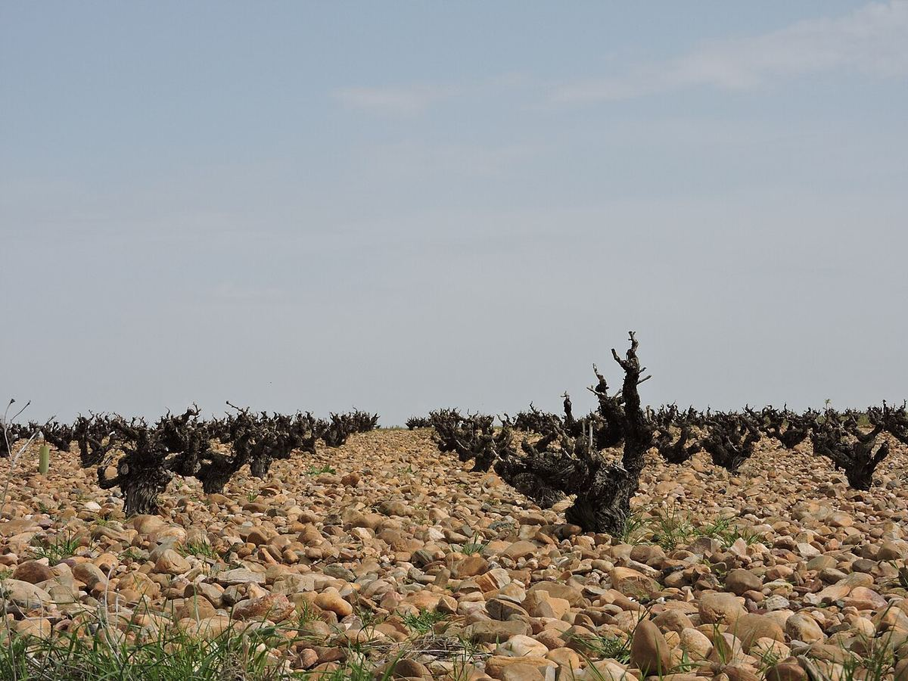

TINTO
Toro es una denominación de origen de Zamora y Valladolid, a orillas del Duero, reconocida en 1987. Sus tintos de Tinta de Toro, variante local de la Tempranillo, destacan por su color intenso, su estructura y su madurez.

El vino de Toro goza de una reputación antigua. Ya en la Edad Media la ciudad de Toro y su comarca eran conocidas por sus vinos, que se vendían en otras zonas de Castilla y gozaron de privilegios reales. Una parte del viñedo resistió la filoxera a finales del siglo XIX gracias a los suelos arenosos, en los que el insecto se desarrolla con dificultad, y por eso todavía se conservan cepas viejas plantadas sin injertar, en pie franco. La Denominación de Origen fue reconocida en 1987. Desde la década de 1990 la llegada de bodegas procedentes de otras regiones y la recuperación de los viñedos antiguos han dado a Toro una notable proyección.
La denominación ocupa tierras de la provincia de Zamora, donde se encuentra la mayor parte del viñedo, y algunos municipios del oeste de la provincia de Valladolid, a ambos lados del río Duero. Los viñedos se sitúan aproximadamente entre 600 y 750 metros de altitud. El clima es continental y seco, con escasas precipitaciones, inviernos fríos y veranos muy calurosos, con muchas horas de sol. Estas condiciones favorecen una maduración completa de la uva, que da vinos de graduación alcohólica a menudo elevada, y la oscilación térmica nocturna ayuda a preservar cierta frescura.
Predominan los suelos arenosos, en ocasiones con subsuelos arcillosos que retienen el agua, y las zonas de cantos rodados en las terrazas del río. La pobreza de estos suelos limita los rendimientos.
La variedad principal es la Tinta de Toro, una adaptación local de la Tempranillo, de hollejo grueso y gran capacidad de color. La acompaña la Garnacha, empleada en tintos y rosados. Entre las blancas se cultivan la Malvasía y la Verdejo. El estilo más característico es el tinto, de color profundo, fruta negra madura, taninos firmes y cuerpo amplio, apto tanto para consumirse joven como para envejecer en barrica. Se elaboran también rosados y blancos, en cantidades menores.
La denominación utiliza las menciones tradicionales de envejecimiento: junto a los tintos jóvenes, que pueden tener un breve paso por madera, se elaboran Crianza, Reserva y Gran Reserva, que deben cumplir los periodos mínimos de envejecimiento en barrica y en botella establecidos por el reglamento. Muchas bodegas trabajan con cepas viejas y rendimientos bajos para elaborar vinos de guarda.